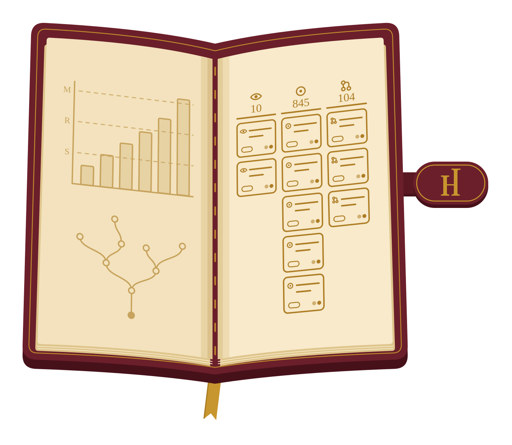
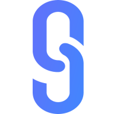
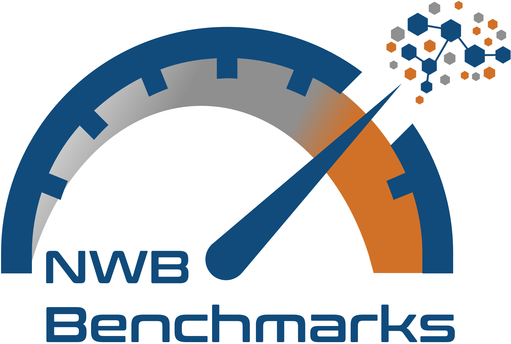

Highlighted Projects
- NWB GUIDE | Lead Developer | 2023-2026
Developed an intuitive user interface for file management using interactive validation and real-time suggestions, streamlining the process for data submission to NIH archives.
Ensured a robust testing suite involving multiple levels of integration and user interactions emulated using Puppeteer to enhance reliability and long-term maintainability.
Tracked and documented dozens of hands-on user tests to refine the user experience.
- nwb2bids | Lead Developer | 2024-Present
-
- Contributions
- Featured contributions
Created a metadata extraction tool for organizing datasets of NeurodataWithoutBorders (NWB) files following the Brain Imaging Data Structure (BIDS) structure. Encourages best practices in data curation, such as self-describing entities, FAIR principles, and rich Hierarchical Event Descriptor (HED) annotations.
Developed in conjunction with the BIDS Enhancement Proposal (BEP) 032 for micro-electrode neurophysiology data.
- NeuroConv | Lead Developer | 2020-2024
-
- Contributions
- Presented in
- NeuroConv: Streamlining neurophysiology data conversion to the NWB standard (2025)
- NeuroConv: Automated conversion of neurophysiology data to NWB format (2023)
- Neuroconv and NWB GUIDE tutorial (2023)
- NeuroConv tutorial (2022)
- Built with
- Hierarchical Data Modeling Framework (HDMF)
Established an automated data conversion tool capable of reading more than 40 distinct data formats used by neurophysiology acquisition devices in order to automatically write to the NeurodataWithoutBorders (NWB) standard.
Designed universal APIs which transparently handled each layer of complexity to simplify the tasks of tagging, grouping, metadata transcription, temporal alignment, asset linking, buffering, chunking, and compression.
Implemented a distributed cloud deployment system to run large-scale, off-site, batched conversions through Amazon Web Services (AWS).
- NWB Inspector | Lead Developer | 2022-2025
-
- Contributions
Built a command line tool used by the NIH data archive to validate all data uploads, which ensures all submissions are provided automated suggestions for metadata improvements that enhance data findability and reuse.
Mirrored the design, style, and functionality of linting tools such as flake8, pydocstyle, and ruff.
- DANDI Compute | Lead Developer | 2025-Present
-
- Contributions
Built an orchestration system that runs processing pipelines over assets already published on the DANDI Archive and uploads the results back to the archive, such as spike sorting through the AIND ephys pipeline and LFP extraction from raw electrophysiology.
Packages each unit of work as a self-describing job capsule carrying its own submission script, parameters, and provenance, runs it as part of a SLURM array job on the MIT Engaging cluster, and tracks every capsule through its lifecycle using nothing but the archive's own metadata.
Automated job submission through a self-hosted runner on the cluster, and published a results page for reviewing, comparing, and curating the pipeline runs.
- S3 Log Extraction | Lead Developer | 2024-Present
-
- Contributions
- Sources
- The DANDI usage page
Created a Python package for the fast extraction of access summary data from Amazon S3 server logs, originally developed for the DANDI Archive and steadily being rolled out to others.
Anonymizes each requester, maps it to a geographic region, and aggregates the requests into per-dataset summaries and archive-wide totals that are shared through a public data repository.
Extended it for the DANDI Archive's own logs and built the DANDI usage page (usage.dandiarchive.org), which visualizes data usage across the archive.
- HEARTH | Lead Developer | 2026-Present Packages
-
- Contributions
Built the Hub for Exploratory Analysis, Resource-sharing, Testing, and Hypothesis-generation (HEARTH), a suite of web apps for the Brain Behavior Quantification and Synchronization (BBQS) consortium and its data on the EMBER Archive.
Includes an uploader for adding files to a Dandiset on the EMBER Archive through a simple drag-and-drop interface, a clip extractor for saving a snippet or single frame of a video, and an encoding helper for the education and comparison of video encodings. The latter two grew from prototypes created in collaboration with the Talmo Lab.
Generalized the shell the apps share into a template for new single-page, backend-free apps and a set of common component packages, each covered by unit, integration, and visual snapshot tests.
- Historia | Lead Developer | 2026-Present
-
- Contributions

Created a command line tool for backing up records of GitHub activity (the pull requests and issues a person opened, was assigned, or reviewed) for use in creating dashboard reports of work history.
Paired with a GitHub Action that runs the whole scheduled update of a work history data repository: fetching recent activity, committing it, populating a GitHub Projects board, and publishing a compressed archive of the data.
Distributed on PyPI and conda-forge.
- Neurosift | UX Consultant and Contributor | 2023-Present
- Contribution: Added on-the-fly analyses computed in the browser: spectrograms of LFP streams with adjustable hyperparameters, and event-related signals that align any time series to a table of intervals.
-
- Contributions
- Featured contributions
-
On the fly spectrogram +4,677 −20Event Related Signals +1,979 −102
- Replaces
- NWB Widgets (Legacy)

Aided in the design of a browser-based application for visualizing the contents of terabyte-scale neurophysiology datasets. Supports time series, images, videos, pose, tabular, annotated events, and all associated metadata through an intuitive exploration interface. Utilizes a specialized HDF5 web assembly implementation for increased efficiency when streaming data from the S3-backed archives.
- NWB Benchmarks | Core Developer | 2024-Present
-
- Contributions
- Built with
- Hierarchical Data Modeling Framework (HDMF)

Managed a collection of unit and integration tests whose performance metrics (time, memory, and web packets) are sampled against a range of environmental run configurations, machine specifications, and bandwidth limits with the results used to assess the performance of HDF5 and Zarr file packaging parameterization against cloud streaming methods.
Run outputs are aggregated into a common public database and built-in visualization tools generate reports of summary findings. A manuscript discussing interpretations and recommendations is in preparation.
Built as an extension on top of the popular Airspeed Velocity (ASV) benchmarking framework.
- duct | Contributor | 2025-Present
- Contribution: Added macOS support and CI runners, a basic structure for using duct as a library, demonstrated self-contained executable binary builds, and clearer errors on unsupported systems.
-
- Featured contributions
Maintained a simple command line tool for monitoring and maintaining records of process-specific system resource utilization of any other command line invocation.
Tracks wall clock time, CPU time, RAM consumption, and more!
- Hierarchical Data Modeling Framework (HDMF) | Contributor | 2021-2025
- Contribution: Created the GenericDataChunkIterator for more efficient lazy, buffered writing of terabyte-scale datasets (existing defaults overlapped chunks and had poor default chunking heuristics), later extending it with serialization, parallel orchestration, and progress bar control.
-
- Contributions
- Featured contributions
-
GenericDataChunkIterator +842 −23
Enhanced a generic schema language for defining structured data standards intended to be written to group-like backend file types (such as HDF5 and Zarr) by generalizing, parallelizing, and optimizing lazy data buffering for terabyte-scale datasets.
- NWB Widgets (Legacy) | Developer | 2021-2023
-
- Contributions
- Replaced by
- Neurosift
Drafted Jupyter widgets-based tools for visualizing the contents of terabyte-scale neurophysiology datasets. Supports many custom plugins for specific neural data types. Has some remote streaming capability, but is more intended for reading from local disks.
Largely replaced by the Neurosift browser-based application.